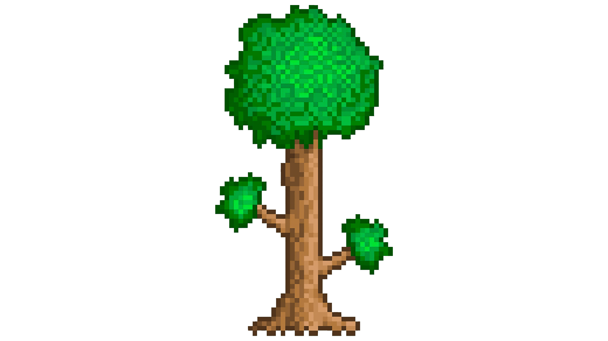
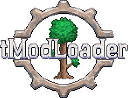

Terraria je 2D sandboxová hra, která vyšla v roce 2011. Točí se kolem průzkumu, budování, craftingu, boje, přežití a těžby, kterou lze hrát v režimu pro jednoho hráče i v režimu pro více hráčů. Je na steamu za peníze, když si ji koupíte tak budete moct hrát TModLoader, je to terraria ale můžete stahovat různé módy, které do hry přídávají víc itemů, bossů, NPCčka někdy i biomů.
 Kdyby jste si s čímkoliv nevěděli rady tak mi můžete napsat a nebo se podívat na youtube, Sterakdary dělal sérii na terrárii kde to podrobně vysvětluje.